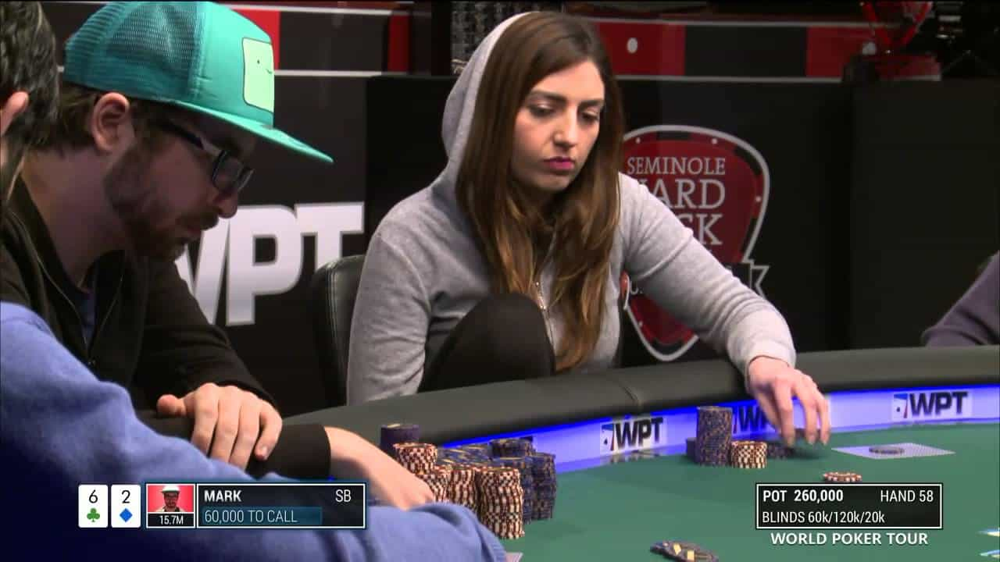
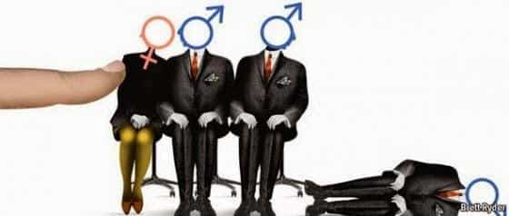

Gearóid Ó hUallacháin is a lover of music, literature, languages and truth. He has long been a student of history and more recently of boxing and Korean women.


The WSOP (World Series of Poker) main event is the largest poker tournament in the world. Every year, thousands of players come from all over the world to compete for the large prize pool and every year, after thousands have busted out and millions of hands have been played, nine men and zero women sit down at the final table to play for the tournament bracelet and the first place prize money.
The WSOP started in 1970, and the main event has been played every year ever since. Out of the 417 players to make the final table, one has been a woman (she finished sixth in 1995). Women are bad at poker. The question is why this is and what steps should be taken to protect them from themselves in this ruthless game.
While I was doing my research for this article, I saw the following white knight excuses thrown out on women’s behalf:
The official figure for how many women competed in the WSOP in 2017 is 4.88 percent. This number is low for two reasons: first, women are less interested in playing poker than men because of natural differences between men and women regarding what they enjoy.
Second, women are bad at poker and those that attempt to play poker professionally cannot make enough money from it to compete in the WSOP; in fact, many of the women that do compete are bought into tournaments by their sugar daddies or beta male providers.

Since women make up five percent of players, they should be around five percent of winners in all categories, if they are indeed as good as men. Let’s have a look:

Modern poker is a brutally competitive game. In order to become a pro, players must be adept in four key areas: math, game theory, psychology, and self-control. If they wish to be successful, players must have the discipline to study all of these elements and implement them during play.
They must have the discipline to adhere to strict bankrolling rules to ensure they don’t go broke. They must have the self-control to remain emotionally detached from the horrific luck they will experience periodically, and the frustration of being outplayed by superior players. They need to maintain a state of emotional calm at the table so they can effectively analyze play based upon the principles they have studied and learned.
Women are bad at poker because they are naturally inept in all four key areas required to be successful at it. Countless studies have shown they are consistently outperformed by men in math at an academic level. Women struggle to understand game theory because, as Dr. Wikipedia states, it is “the study of mathematical models of conflict and cooperation between intelligent rational decision-makers.” As we have established, women are bad at math.
For an indication of their level of rational intelligence, check some footage of this year’s annual feminist workout (also known as the Women’s March). With regard to psychology, women are too ruled by emotions such as jealousy, spitefulness, and a sense of vulnerability to make accurate assessments of their opponent’s state of mind or intentions.
Finally, women lack self-control, the ability to hold oneself back from the push and pull of emotion in order to make objective, rational, and careful assessments in a manner that reveals truth and suggests which actions are best taken.
All this is to say nothing of women’s vastly inferior physical stamina, a necessity if one is to make it far in long, grinding tournaments that are often played over a period of days, or the disadvantages of severe mood swings during menstruation, pregnancy, and long periods of time without access to social media (smartphones are banned at poker tables).

The world of poker does not have an HR department to fire masculine men and replace them with miserable career hags. There are no diversity quotas. There are no government gargoyles prowling around to ensure that affirmative action laws are obeyed. Male players are not going to willingly lose money to women for the sake of “progress.”
Poker is a zero sum game and as such is immune to female privilege. It is the free market in its purest form; the strong rise to the top, while the weak are destroyed and left to wither by the wayside, as it should be.
The only way for women to have a fair shot at poker is for them to be banned from playing with men. This would be beneficial for men since they could concentrate on reading their opponents’ hands, trying to understand the psychology of the table, analyze playing patterns, or going through the often difficult math calculations without the distraction of women at the table prattling vacuous jibberish to one another that the beta male players and tournament staff are too emasculated to shut down.
Men would also benefit from the removal of hot women who distract their concentration by inciting involuntary carnal fantasies, and ugly women who are a depressing sight and thus make the experience of playing poker less enjoyable.
Of course, the overwhelming beneficiaries would be women themselves. The natural handicaps of the female brain ensure that any chance they have of making money against men is vanishingly small. Putting a woman at a poker table with men is like throwing a vixen into a melee with wolves. Allowing women to play poker only amongst themselves protects them from male predation.
I am all for allowing women to play poker between themselves while they jibber-jabber about whatever irrelevant topic happens to be floating through their capricious minds at any given moment, but putting them at a table with seasoned, disciplined male pros is simply wrong, and must stop.
Read more: 5 Reasons Women Should Be Banned From Working As Police Officers